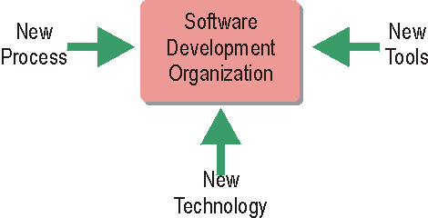

| Configurable Process |
|
 The Rational Unified Process provides a framework that can be customized to each software development organization's specific needs. Factors that affect how the customization should look include what technology is used, what tools are employed, as well as what processes are currently used in the organization. The Rational Unified Process (RUP) is general and complete enough to be used by a wide-range of software development organizations. In many circumstances, this software engineering process will need to be modified, adjusted, extended and tailored to accommodate the specific characteristics, constraints and history of the adopting organization. The Environment discipline describes how you would go about customizing and implementing a new software development process in your project. The result of this customization is reflected in the project-specific process. See Concept: Tailoring RUP for details. You can extend the RUP web site to incorporate your development organization's process "know-how" or a set of reusable assets. For more information see Rational Method Composer. |
© Copyright IBM Corp. 1987, 2006. All Rights Reserved. |